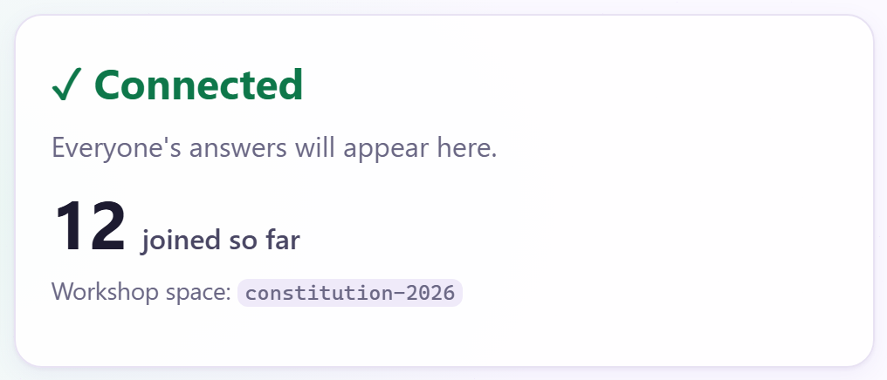
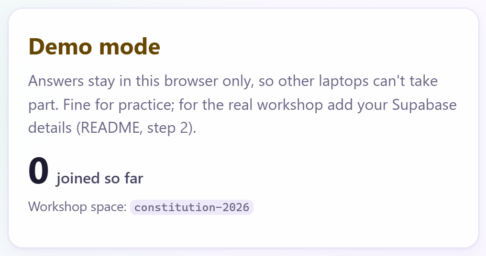
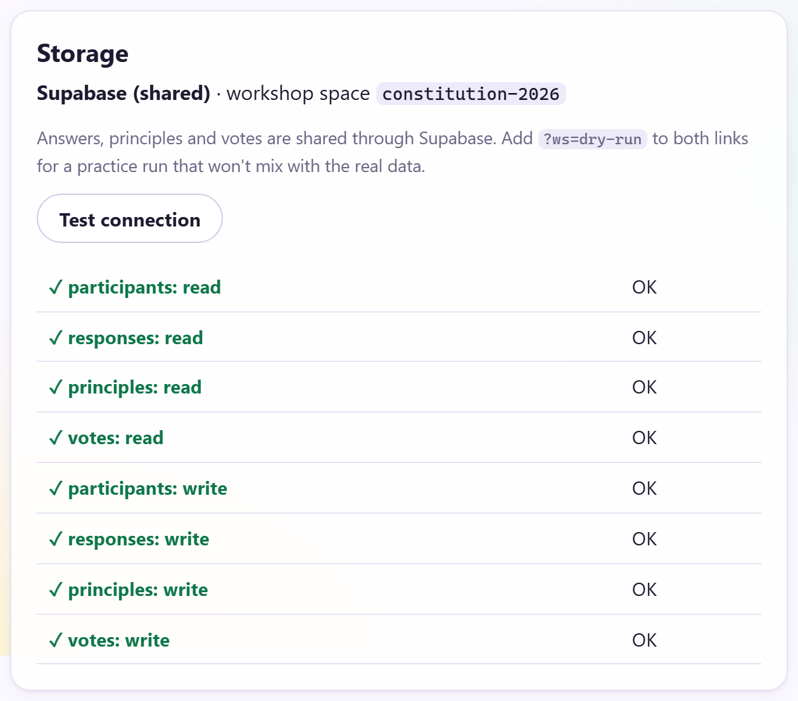
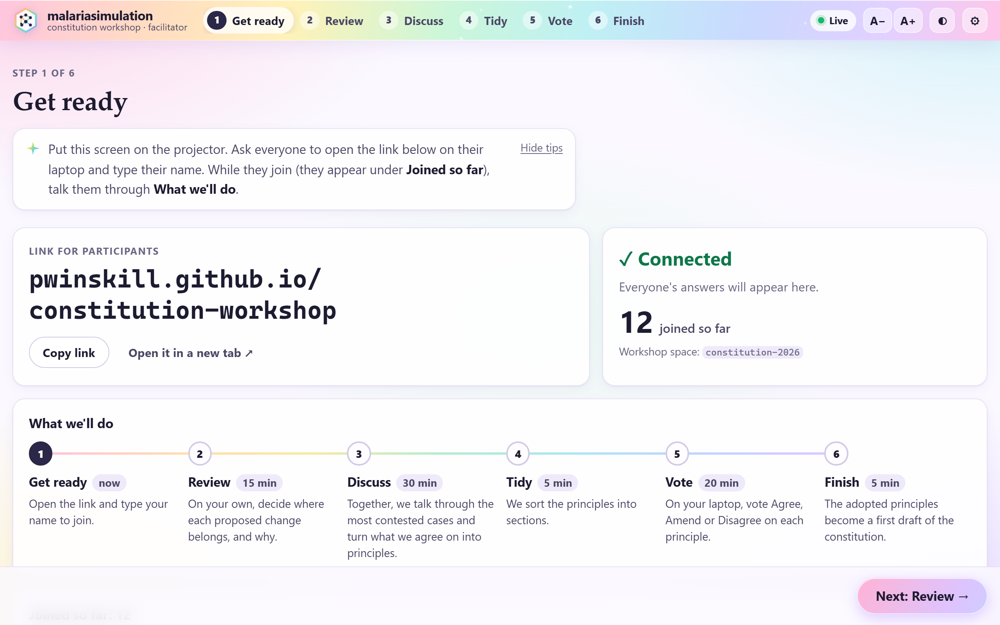

malariasimulation constitution workshop
Do the steps in order. Setting up and checking takes about 40 minutes, and is best done a few days before.
Go to supabase.com and sign in (signing in with GitHub is easiest). Click New project, pick a region near you (e.g. London) and click Create new project. It takes a minute or two.
In the menu on the left, open SQL Editor. Copy everything in supabase/schema.sql, paste it in, and click Run. It should say Success.
Click Connect at the top of the page (or open Project Settings → API Keys). Copy the Project URL and the publishable key, which starts sb_publishable_.
Never use the secret or service_role key.
Open data/workshop.json, paste them between the quotes near the top, and save:
"supabaseUrl": "https://abcdefghij.supabase.co", "supabaseKey": "sb_publishable_…"
On github.com, click + then New repository. Call it constitution-workshop, choose Public, and click Create repository.
Click the link uploading an existing file. Drag in everything from the project folder, wait until the uploads finish, and click Commit changes.
Open Settings → Pages. Under Branch, change None to main, keep / (root), and click Save.
Wait a minute or two and refresh. The address it shows (Your site is live at …) is your participant link. Add facilitator.html to the end for your facilitator link. Write both in the boxes at the top.
To change a file later (say, a typo in a case), open it on GitHub, click the ✎ pencil, edit it and click Commit changes. Changes can take up to 10 minutes to appear.
Open your facilitator link. The box on the right should say ✓ Connected.


data/workshop.json on GitHub (step A4), wait a few minutes and refresh.Click ⚙ (top right), then Test connection. Every row should have a green ✓. If one shows ✕, the message next to it says what to fix.

Use these practice links. They keep the practice separate, so the real workshop still starts empty.
| On your laptop | your facilitator link + ?ws=dry-run |
| On the phone | your participant link + ?ws=dry-run |
Turn the phone's Wi-Fi off, so it's like someone joining from outside.
Open the practice links. On the phone, type a name and tap Join
The name appears on your laptop under Joined so far.
On the phone, answer one case and tap Save and next case →
On the laptop, the Review step shows 1 review done.
On the laptop, go to Discuss, click ✚ Capture a principle, type anything and click Capture. Then go to Vote and click Open voting.
On the phone, tap Vote now → and vote.
The vote appears on the laptop within a few seconds. Everything works.
Sign in to supabase.com. If your project says Paused, click Restore and give it a few minutes. Free projects pause after a week without use.
Open your facilitator link. Does it say ✓ Connected?
Send everyone the participant link and the participant guide, plus the call link for anyone joining online. The guide is on your site at:
your participant link + guides/participant-guide.html
Plug the laptop into the projector, connect to the Wi-Fi, and open your facilitator link in Chrome or Edge. Press F11 for full screen, and click A+ (top right) until the text is readable from the back.
Start the call, share your browser window, and paste the participant link into the chat.
They're along the top of the page. Each page says what to do, and Next → (bottom right) moves you on.

| Step | Time | What to do |
|---|---|---|
| 1 Get ready | 5 min | While people join, talk them through What we'll do. Move on when most names appear under Joined so far. |
| 2 Review | 15 min | Click Start timer. Everyone answers on their own, and the results stay hidden. Move on when most have finished. |
| 3 Discuss | 30 min | The page opens on the case with the most disagreement (first in the row of cases). Ask someone from each side to explain. When the group agrees on a rule, click ✚ Capture a principle. Stuck? Click 💡 Show a suggested principle. |
| 4 Tidy | 5 min | Give each principle a section. Drop duplicates and fix the wording. A section still empty? Click 💡 Show a suggested principle in it. |
| 5 Vote | 20 min | Click Open voting. ✓ Adopt principles with clear support (67% agree). Reword any with lots of Amend votes, which starts a new vote. Drop the rest. |
| 6 Finish | 5 min | Click ⬇ Download the constitution, then download the workshop record files below it. |
That's 80 minutes, which leaves 10 to spare.
Check that the files from step 6 are saved somewhere safe.
| What you see | What to do |
|---|---|
| It says Demo mode | The website can't see your Supabase details. Check data/workshop.json on GitHub, wait a few minutes and refresh. |
| ✕ Can't reach the database, or Offline | Check the Wi-Fi. If Supabase says Paused, click Restore. People can keep going: their answers send when the connection is back. |
| Someone typed the wrong name | They click Not you? (top right) and join again. You can remove the wrong name in ⚙ Setup. |
| Someone wants to change laptop | They open the link on the new one, type the same name, and click Yes, that's me. |
| A page seems stuck | Refresh it (F5). Nothing is lost. |
| The text is too small | Click A+ (top right). |
| You closed the tab | Open the facilitator link again. It goes back to the same step. |
Once you have the downloads, delete the Supabase project (Project Settings → General → Delete project). To keep it as a read-only record instead, run the lines at the end of supabase/schema.sql.
In the GitHub repository, open Settings → Pages and unpublish the site, or delete the repository.